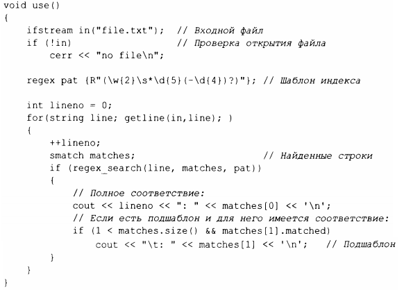

⇐9.4 Регулярные выражения 9.4.2 Запись регулярных выражений⇒
Простейший способ применения шаблона - поиск соответствия ему в потоке данных:
regex_search ( line, ma tches, ра t) выполняет поиск в line всего, что соответствует регулярному выражению, хранящемуся в ра t, и если находятся какие-либо совпадения, то они сохраняются в ma tches. Если совпадений не найдено, regex_search(line,matches,pat) возвращает false. Переменная matches имеет тип smatch. Буква s означает string, а smatch представляет собой vector найденных соответствий типа string. Первый элемент, здесь - ma tches [О], представляет собой полное совпадение. Результат regex_search () представляет собой набор совпадений, обычно представленных в виде smatch:
Эта функция читает файл в поисках почтовых индексов США, таких как ТХ77845 и ОС 20500-0001. Тип smatch - контейнер с результатами поиска. Здесь ma tches [О] - это весь шаблон, а ma tches [ 1] - необязательный четырехзначный подшаблон.
Символ новой строки \n может быть частью шаблона, поэтому можно искать многострочные шаблоны. Очевидно, если мы хотим это сделать, нам не следует читать строки по одной.
Синтаксис и семантика регулярных выражений разработаны таким образом, что регулярные выражения могут быть скомпилированы в конечные автоматы для эффективного выполнения [14]. Тип regex выполняет эту компиляцию во время выполнения.